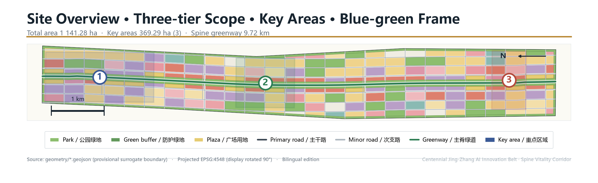
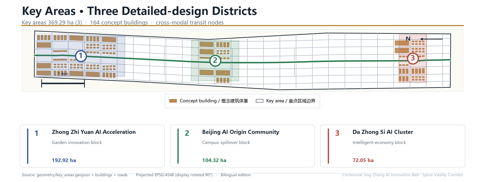
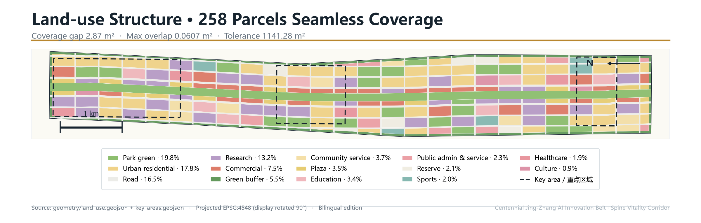
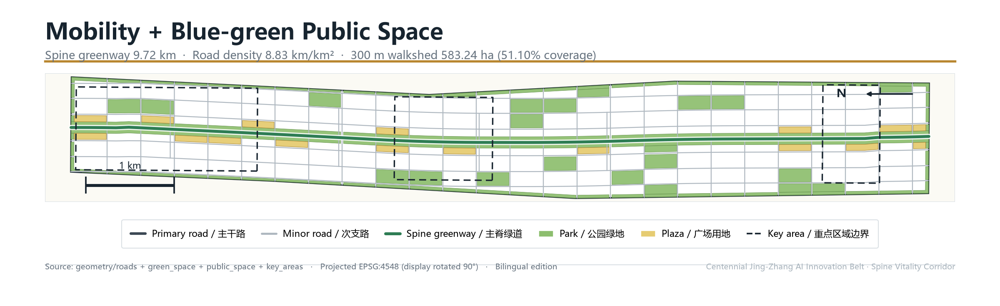

Coordinated research 43.61 km²
AI industry ecosystem, three-district two-wing coordination, future-city form, cultural narrative.
An offline, self-contained visual digest of the concept proposal. Authoritative values live in the GeoJSON, metrics.json, the three matrices and self_check.json; this page turns the overview map, three-tier scope, key districts, land-use, mobility, blue-green space, buildings, renewal projects, AI scenarios, core metrics, task coverage and self-check status into a readable board.
Three-tier scope, key districts, land-use, mobility and the blue-green spine in one evidence drawing.

29 known metrics are independently recalculated from GeoJSON via shapely + pyproj (EPSG:4548), identical to scripts/spatial_review.py; 8 unknowns are honestly tagged.
All primary values recalculated on EPSG:4548 geometry; unknown metrics are never estimated.
Nested coordinated-research / overall-design / key-district tiers bind strategy to layers and metrics.
AI industry ecosystem, three-district two-wing coordination, future-city form, cultural narrative.
Control-planning-depth urban design, renewal list, blue-green slow-traffic system.
Three detailed-design districts: Zhong Zhi Yuan / AI Origin / Da Zhong Si.
Three districts translate the concept into measurable urban-form moves: positioning, spatial strategy, building renewal, public space, transit.

Garden innovation block: national platform, exhibition, Qinghe culture, low-carbon public space.
Campus-spillover block: university innovation, open-source community, talent services, station integration.
Intelligent-economy block: leading firms, agent-native commerce, four-quadrant connectivity.
258 parcels cover 11.41 km² seamlessly — gap 2.87 m², max overlap 0.0607 m², far below the 1141.28 m² tolerance.

Primary/minor roads plus a continuous 9.72 km spine greenway; the 300 m walkshed covers 51.10% of the design scope.

Park + buffer green give a 25.27% green ratio; standalone plaza land is 3.48%, forming a continuous public-space network along the spine.
164 concept buildings deepened only in the three key districts; gross FAR 1.427, max height 60 m, concept GFA ~5.27 M m².
Twelve renewal projects sequenced 'public-first, interface-second, parcel-last' across PH-01/02/03.
12.5 km slow-traffic main greenway
AI Origin public spaces
Three talent service circles
Four parking conversions
Four corridor upgrades
Cluster renewal
Zhong Zhi Yuan facilities
Jing-Zhang Memory Route
Global AI Activity Week
Three compute stations
AI Safety Governance Corridor
Culture + library + museum
Ten AI scenario cards each state service target, spatial location, data source, privacy boundary, human review and operator.
Release & model-evaluation node
Controlled agent testing
Heritage-park break detection
Live-learn-shop-sport-social
Standards & trusted evaluation
Transformation roadshows
Data-asset & terminal showcase
Distributed energy & edge compute
Railway & innovation culture
Developer festival & city routes
compliance / standard / design-depth matrices cover announcement 1.3/1.4/1.5, agent.1–agent.6 and the mandatory standards.
Sources live in sources.json, agent_taskbook.json, data/processed/agent_fact_pack.md and standards/references. This page loads no CDN, remote tiles, external scripts, external fonts, API or iframe.
Missing regulatory controls, red lines, ownership, municipal, heritage and engineering conditions are listed in assumptions.json with their design impact.
All four gates — deterministic validation, spatial review, visual packaging, professional evidence — must pass before formal review.
deterministic validation · spatial_review · visual_review · professional_review — four gates.
Provisional surrogate boundary: intake pass only; replace with official polygons before scoring.